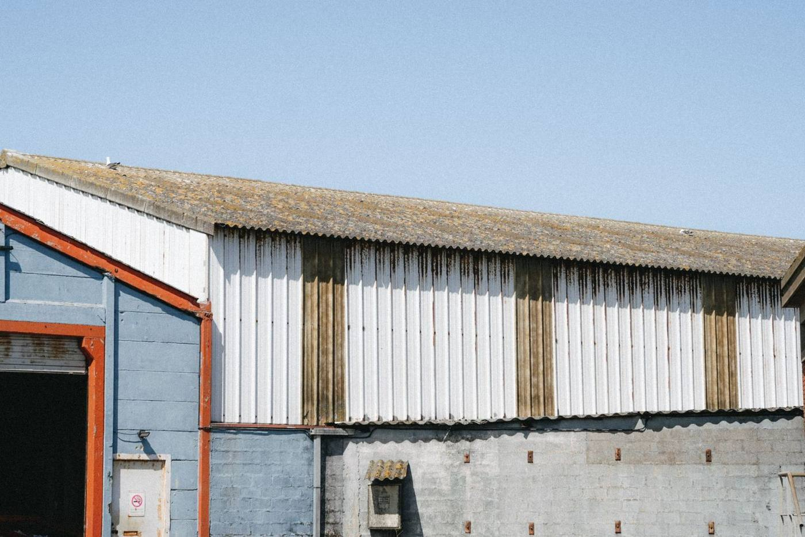
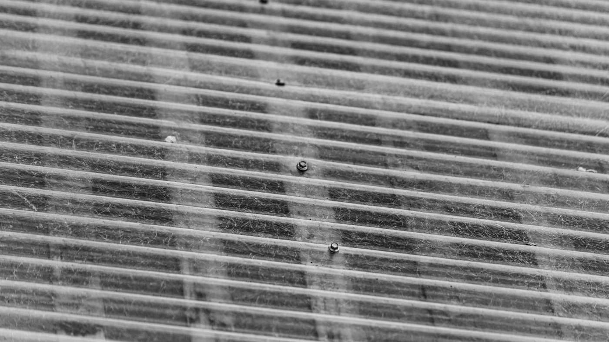
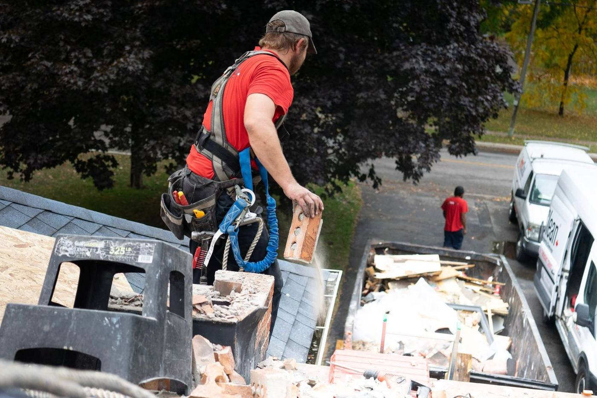
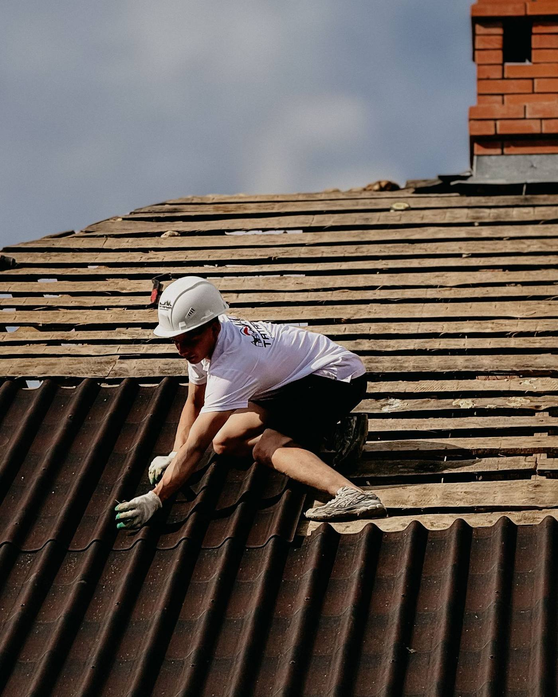
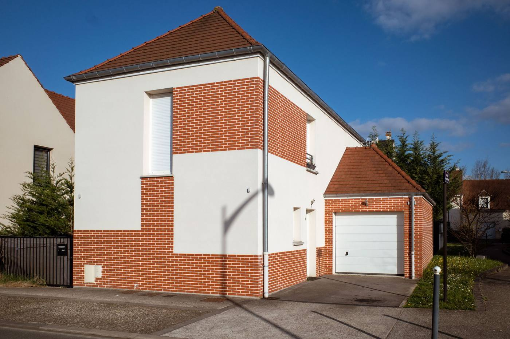

Fibrociment · Toitures et bardages
Toiture de garage, hangar, appentis, bardage : la dépose d'un fibrociment amianté ne s'improvise pas et ne se jette pas en déchèterie ordinaire. On s'occupe de la dépose, de l'évacuation en filière agréée et de la repose.
Combien ça coûte, chez vous ? Ce qui fait varier le prix, expliqué sans détour.
Réponse le jour même du lundi au samedi, 8 h – 19 h. Le formulaire, lui, reste ouvert 7 j/7 : on rappelle dès la réouverture.

Pourquoi c'est un sujet à part
En Essonne, on en trouve sur presque tous les garages et abris de jardin des pavillons construits avant 1997, ainsi que sur les anciens ateliers. Tant que la plaque est saine, elle ne libère rien. Dès qu'elle se délite, se casse ou qu'on la brosse, c'est autre chose.
Ne brossez pas, ne percez pas, ne passez pas le nettoyeur haute pression. Si vous avez un doute sur la nature de vos plaques, appelez avant de toucher quoi que ce soit : le diagnostic est fait pour ça.


Comment on procède
La règle d'or est simple : on ne casse rien. Toute la méthode consiste à déposer les plaques entières, sans les agresser, et à les emballer avant de les descendre.
Comment ça se passe
Aucune surprise : vous savez à l'avance qui vient, quand, et ce que vous payez.
Surface approximative, type de bâtiment, année de construction, état des plaques. On vous dit ce qui est envisageable.
Obligatoire ici : la nature du matériau, l'état de la charpente et l'accès conditionnent toute la méthode.
Dépose, conditionnement, évacuation en filière et repose sont chiffrés ligne par ligne. Aucun poste caché.
Zone balisée, dépose maîtrisée, évacuation. Vous recevez les bordereaux de suivi de déchets.
Le résultat
Le plus souvent, la dépose est l'occasion de refaire une couverture neuve sur un bâtiment qu'on n'osait plus toucher.

AprèsPhotos d'illustration du métier, et non de chantiers VBR : elles seront remplacées par vos propres avant / après dès que vous nous les fournirez.
Combien ça coûte
Le coût de traitement du déchet est une part importante du budget, et elle est incompressible. Méfiez-vous d'un devis nettement moins cher que les autres : la différence se fait presque toujours sur la filière d'évacuation.
Ce qui fait varier le prix, chez vous :
On ne chiffre jamais un désamiantage sans visite : la nature du matériau et l'accès décident de tout. Le déplacement et le devis sont gratuits, et l'évacuation figure toujours sur une ligne séparée.
Obtenir mon chiffrageAppelez-nous avant de toucher quoi que ce soit. On identifie le matériau, on vous dit ce qu'il faut faire, et vous décidez ensuite.
Ce qu'en disent les clients
« Professionnel réactif et très compréhensif. Il explique patiemment comment il travaille. »
« Très professionnel. Pose de gouttières, travail de qualité et à l'écoute de toutes vos questions. Équipe sérieuse et courtoise. »
« Très professionnel. Rénovation de notre toiture faite avec sérieux, travail rigoureux entrepris à l'écoute de son client. »
« J'avais besoin de remplacer quelques tuiles. Très satisfait de leur réponse rapide et amicale, super équipe. »
Avis publiés par VBR Nettoyage sur vbrnettoyage.fr.
Zone d'intervention
De la vallée de l'Orge au Hurepoix, de Massy et Palaiseau au nord jusqu'à Étampes et Dourdan au sud, en passant par Évry, Corbeil et Brétigny. Un déplacement, un devis, aucun frais.

Les questions qu'on nous pose
Toute plaque en fibrociment posée avant l'interdiction de 1997 est présumée amiantée tant qu'un repérage ne prouve pas le contraire. La date de construction du bâtiment donne déjà une bonne indication, et l'aspect des plaques en donne une autre. En cas de doute, seul un prélèvement analysé en laboratoire tranche.
Un particulier peut légalement intervenir sur son propre bien, mais c'est fortement déconseillé : sans équipement ni méthode, on casse les plaques et on disperse les fibres, chez soi et chez les voisins. Et l'évacuation en filière agréée reste obligatoire dans tous les cas.
Ils partent conditionnés et scellés vers une installation autorisée à les recevoir. Vous recevez le bordereau de suivi de déchets : c'est votre preuve que l'évacuation a bien été faite dans les règles, et elle vous servira à la revente du bien.
Le nettoyage haute pression est à proscrire absolument : il libère et disperse les fibres. Certains traitements de surface existent, mais ils ne font que retarder l'échéance sur un matériau déjà dégradé. Sur des plaques en fin de vie, la dépose est la seule réponse durable.
Pour une simple dépose sans changement d'aspect, généralement non. Dès qu'il y a repose avec un matériau ou une teinte différents, une déclaration préalable est en principe nécessaire, et elle est obligatoire en secteur protégé. On vous oriente au moment du devis.
Oui, et c'est même le plus fréquent : dépose et repose s'enchaînent sur le même chantier, ce qui évite de laisser le bâtiment ouvert et de payer deux fois l'accès et l'échafaudage.
Votre devis
Dites-nous la surface approximative, l'année du bâtiment et l'état des plaques. On vous rappelle sous 24 h ouvrées, et la visite décidera de la méthode.